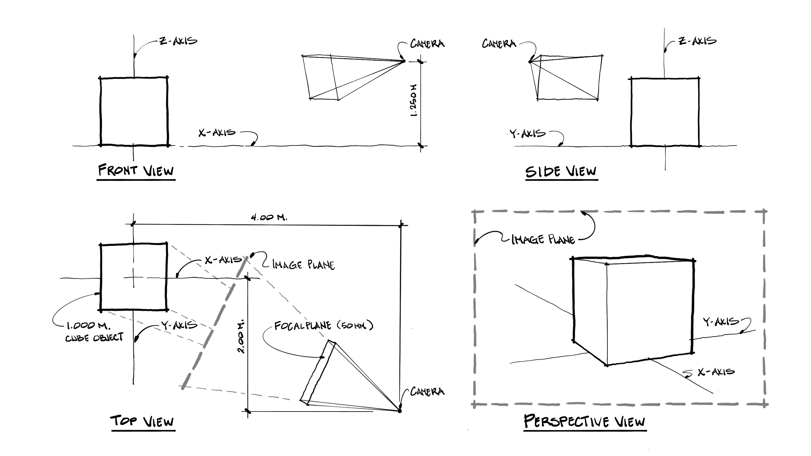

Electronic Modeling Method of Perspective

One of the best tools for three-dimensional visualization is an electronic digital model. Some of these models can be created very intuitively and quickly. Others require painstaking and arduously long hours at the computer. The requirements for selecting one over the other are often a function of both the stage of the architectural design and client requirements for a presentation of the design. It is important for guarding your precious time that you do not fall in the trap of building a detailed computer model too soon. A much better use of your time on the computer is to build the very basics of a three-dimensional framework that allows you to do some previsioning and manipulation of the model to generate your preferred view. After this very quick modeling session it can be beneficial to “print” the framework to a reasonable size on paper and use an overlay technique of tracing paper refinements like the thumbnail perspective method. While it can be immensely enjoyable to create new virtual worlds like in a Minecraft (2021) game, you are well advised to avoid the indulgence of modeling too much detail and progress quickly to the rendering and visioning stages of architectural design.
One of the best pieces of advice about electronic modeling you can follow is the idea to work as “flat” as possible for as long as possible. What does this mean? Often the designer proceeds from a two-dimensional multi-view orthographic drawing such as a plan, section, or elevation. Working flat is the process of drawing rectangles, lines, and shapes without a “Z” dimension. This process is useful because most electronic modeling programs are sticky and ambiguous in the representation of depth! What does that mean? Geometries are welded together at vertices. When you try to move a line segment to a new position, it can have many unintended stretching consequences. Additionally, when we view space from a non-orthographic perspective our relationship to the depth that we see may be intuitively obvious to us, and the computer does not share our intuition. The software developers have embedded inferences about intersecting geometries that can sometimes be helpful. On the other hand, it can be exceptionally frustrating when the computer gets it wrong! Therefore, work for as long as possible while managing only two dimensions. When it is time to push and pull your geometries into the z-axis, then it will be an exceptionally satisfying experience. But wait…there’s another thing to do before that.
Since geometries tend to be joined at vertices resulting in unintended stretching, each program you will encounter has some method of grouping elements together into systems. You are well advised to be profligate in your use of these groups. This is powerful modeling, and the pros make excellent use of this kind of templating of components. The following table is a guide to some common terminology for you to research and learn the basics of making groups or components:
| Program Name | Element Name |
| AutoCad | Block |
| REVIT | Family |
| SketchUp | Group, Component |
| Blender | Group |
| Maya | Group |
Here are some final thoughts about the electronic modeling method. It is much easier to create any view that you desire, and this can have some unintended consequences. Extreme perspective distortion can be very exciting, and when it is not a deliberate choice of the designer, it can also be very distracting to your focus on the design. Here are a few reminders from an earlier discussion about photography. Our most frequent view of an object is from a standing eye-level perspective, usually about five feet (1.5 meters) above the ground and with a 50mm lens. This view will challenge you, because it often does not allow you to include everything that you have modeled. Maintaining this view is a good discipline, and if you are wanting to show more distortion, then have a very good reason for that view and be deliberate in your purpose (e.g., contrast, tension, dynamics, juxtaposition, etc.) Additionally, use the computer as a tool. Model only the bare basics of what you need for the purpose. As an example, in the next assignment you will be asked to model a guest house electronically. Our main purpose here is to use the computer as a tool to define and design the sun and shade patterns. You only need the basic cubic volumes. No materials are needed. No textures are needed. This is often referred to as a clay model rendering, which owes its namesake to the physical modeling material clay. Two main advantages come from this decision to be minimalistic in your approach: it takes far less time for you to model, and it takes far fewer resources for the computer to render the desired image. Always remember that the goal is a tone value rendering. The software can make this task both harder and easier. The choice is yours!